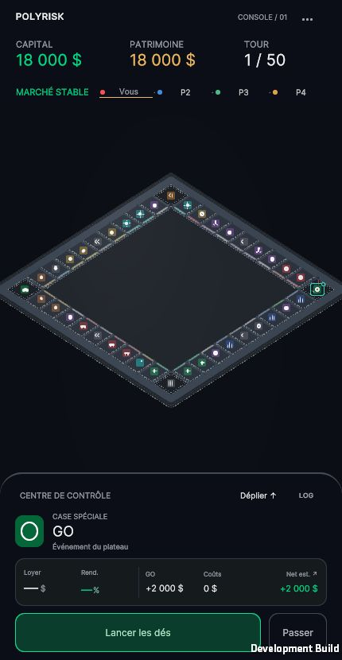
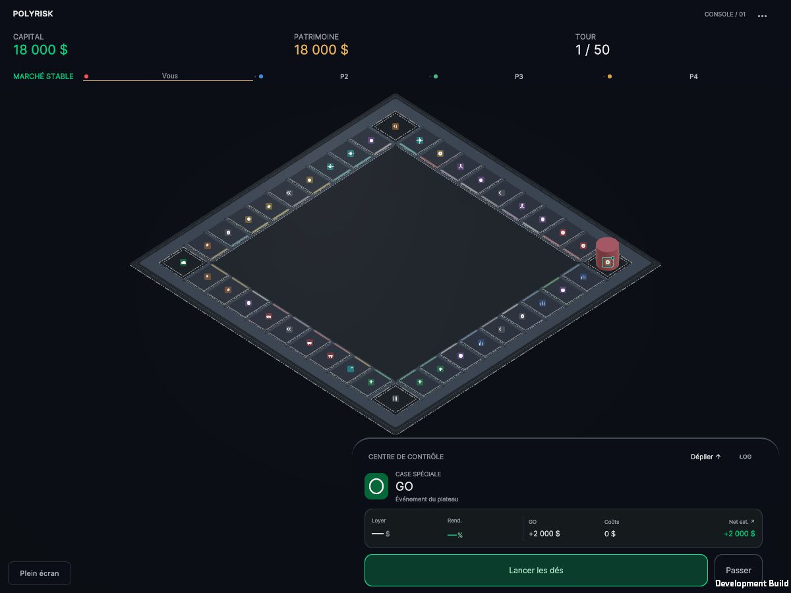
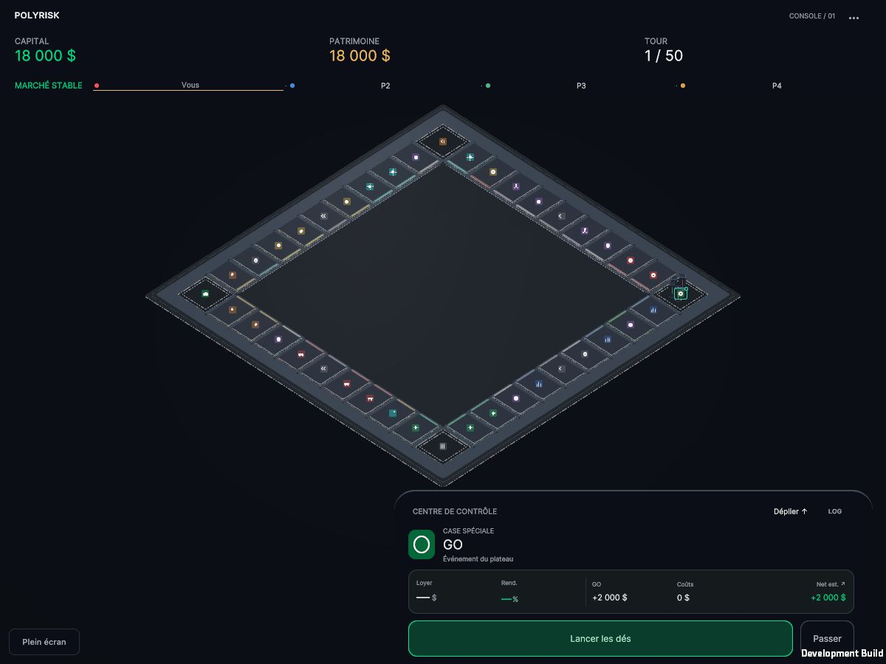

430 × 830 — avant / après


Rapport, paramètres et limites · Prototype WebGL
Rendu Unity réel. « Partie » utilise les données du moteur. Le banc visuel utilise le prefab et PawnMovement réels sur des parcours déterministes, sans actions économiques. Les pistes audio proviennent de la sortie WebAudio de ce WebGL ; aucun microphone.
Banc visuel : 0–2,9 s, contrôles rapides des 40 positions ; vers 4,4 s, quatre occupants ; 5–6,4 s, activation / repos / émission coupée ; 6,5 s, deux cases ; 8,7 s, six cases ; 11,5 s, douze cases et deux coins ; 16 s, frames lentes ; 19,3 s, Reduced Motion. Ces sauts de contrôle initiaux ne sont pas un mouvement normal du jeu.
Quatre occupants — image native · Pion testé sans émission · Glide et suivi
Contacts légers et verrouillages du banc portrait. Volume de prototype, à juger avec les vidéos.



Même géométrie et mêmes matériaux. Agrandissement d’exposition uniquement, caméra de jeu inchangée.